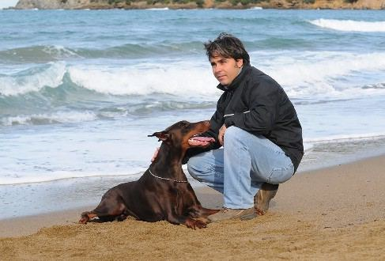
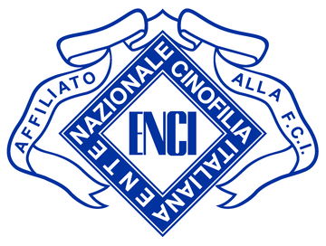
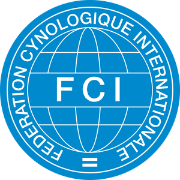

Affisso ENCI / FCI Riconosciuto
Passione • Selezione • Professionalità dal 1993
Chi Siamo
L'allevamento Di Casa Fox Dobermann nasce nel 1993 dalla profonda passione di Stefano Sardelli per questa straordinaria razza. Quello che è iniziato come un sogno si è trasformato negli anni in un punto di riferimento riconosciuto nel panorama cinofilo italiano.
Con l'affisso "Di Casa Fox", riconosciuto da ENCI e FCI, l'allevamento si distingue per un approccio rigoroso alla selezione genealogica, privilegiando carattere, salute e conformità allo standard di razza.
Ogni cucciolo nasce e cresce in un ambiente familiare, ricevendo le migliori cure, l'imprinting corretto e una socializzazione approfondita, per garantire un cane equilibrato e affidabile per tutta la vita.

Dall'allevamento selezionato all'addestramento professionale, offriamo un percorso completo per il cane e il suo proprietario.
Cuccioli Dobermann con pedigree ENCI/FCI, selezionati per carattere, salute e morfologia.
Selezione genealogica rigorosa per preservare e migliorare le caratteristiche della razza.
Corsi di educazione cinofila, obbedienza e socializzazione per cani di tutte le età.
Preparazione professionale per la prova attitudinale ZTP e le esposizioni internazionali.
Addestramento avanzato per cani da utilità e difesa con tecniche moderne e rispettose.
Struttura accogliente per la pensione del tuo cane, con cura e attenzione personalizzata.
Selezionati per eccellenza
Ogni cucciolata viene pianificata con cura, selezionando riproduttori per salute, carattere e morfologia secondo gli standard ENCI-FCI. Per informazioni sulle future disponibilità è possibile contattare direttamente l’allevamento.
L’allevamento Di Casa Fox Dobermann opera con affisso ufficialmente riconosciuto dagli enti cinofili più autorevoli a livello nazionale e internazionale.

Ente Nazionale della Cinofilia Italiana
Affiliazione ufficiale all’ente che regola la cinofilia italiana, garante dell’autenticità genealogica e del Libro Origini Italiano (LOI).

Fédération Cynologique Internationale
Riconoscimento internazionale che garantisce la validità del pedigree in oltre 90 paesi nel mondo, con standard di razza condivisi globalmente.
Partnership
Siamo partner Reico Vital-Systeme, azienda tedesca specializzata in alimentazione naturale ed equilibrata per cani e gatti. Attraverso il nostro sito dedicato puoi scoprire prodotti, filosofia e consulenza nutrizionale per garantire al tuo cane tutto ciò di cui ha bisogno.
Scopri Reico